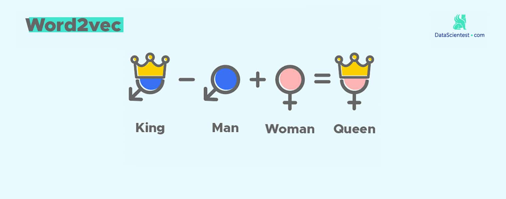

本文要点
- 读取 csv
- 准备语料
- cntext2.x 训练词向量模型
- 运用词向量模型
一、读取数据
import pandas as pd
df = pd.read_csv('douban.csv')
df.head()
print("电影 : {} 部".format(df.Movie_Name_CN.nunique()))
print("评论 : {} 条".format(len(df)))
Run
电影 : 28 部
评论 : 2125056 条
二、准备语料
提取文本，去除非中文字符，保存为txt文件
import pandas as pd
df = pd.read_csv('douban.csv')
with open('douban.txt', 'w', encoding='utf-8') as f:
raw_text = '\n'.join(df['Comment'].fillna(''))
f.write(raw_text)
三、训练模型
3.1 安装cntext2x
将 cntext-2.1.6-py3-none-any.whl 放置于桌面，打开 cmd (苹果电脑打开terminal)， 输入cd desktop
cd desktop
之后在 cmd (苹果电脑打开terminal) 中使用 pip3 安装
pip3 install cntext-2.1.6-py3-none-any.whl
文末有 cntext-2.1.6-py3-none-any.whl 获取方式
3.2 训练模型
使用 cntext2.x 库(版本号2.1.6) 训练词向量word2vec模型, 这里我把 csv 数据整理为 txt
import cntext as ct
# 训练
w2v_model = ct.Word2Vec(corpus_file = 'douban.txt',
encoding='utf-8',
lang='chinese',
vector_size=200,
window_size=15,
only_binary=True) # 只保存二进制模型文件
Run
Mac(Linux) System, Enable Parallel Processing
Cache output/douban_cache.txt Not Found or Empty, Preprocessing Corpus
Processing Corpus: 11150it [00:07, 5759.05it/s]
Reading Preprocessed Corpus from output/douban_cache.txt
Start Training Word2Vec
Word2Vec Training Cost 2001 s.
Output Saved To: output/douban-Word2Vec.200.15.bin
在代码所在文件夹内可以找到
- output/douban-Word2Vec.200.15.bin
- 新的 pos.txt
- 新的 neg.txt
新的 pos.txt 是对 pos.txt 词典的扩展。
2.4 评估模型
使用近义法和类比法， 判断模型的表现。详情可查看文档
ct.evaluate_similarity(w2v_model)
ct.evaluate_analogy(w2v_model)
Run
近义测试: similarity.txt
/Library/Frameworks/Python.framework/Versions/3.12/lib/python3.12/site-packages/cntext/model/evaluate_data/similarity.txt
评估结果：
+----------+------------+----------------------------+
| 发现词语 | 未发现词语 | Spearman's Rank Coeficient |
+----------+------------+----------------------------+
| 459 | 78 | 0.43 |
+----------+------------+----------------------------+
类比测试: analogy.txt
/Library/Frameworks/Python.framework/Versions/3.12/lib/python3.12/site-packages/cntext/model/evaluate_data/analogy.txt
Processing Analogy Test: 100%|██████████████| 1198/1198 [00:11<00:00, 99.91it/s]
评估结果：
+--------------------+----------+------------+------------+----------+
| Category | 发现词语 | 未发现词语 | 准确率 (%) | 平均排名 |
+--------------------+----------+------------+------------+----------+
| CapitalOfCountries | 615 | 62 | 39.02 | 2.98 |
| CityInProvince | 175 | 0 | 28.57 | 4.74 |
| FamilyRelationship | 272 | 0 | 92.65 | 1.48 |
| SocialScience | 8 | 62 | 25.00 | 6.00 |
+--------------------+----------+------------+------------+----------+
近义测试: Spearman’s Rank Coeficient系数取值[-1, 1], 取值越大， 说明模型表现越好。
类比测试:
- CapitalOfCountries 豆瓣影评语料在此项表现尚可，可能目前电影库中有一定比例的外国素材。
- CityInProvince 豆瓣影评语料在此项表现较差，不太可能是中国素材太少，可能大多数省市以类似汉东省的形式出现。这是我的猜测。 人民网留言板语料Word2Vec中，该项准确率100%。
- FamilyRelationship 豆瓣影评体现的是电影相关内容，而电影永远的主题是人性， 内容少不了家长里短，七大姑八大姨，所以此项准确率高达92.65%。 以年报MD&A为例，此处准确率只有10%。
- SocialScience 豆瓣影评语料在此项表现一般， 应该是语料中常见的社会科学词语提及较少。
整体而言，语料训练的效果很不错，抓住了数据场景的独特性语义。
四、使用Word2Vec
4.1 导入Word2Vec模型文件
import cntext as ct
# 导入模型，请注意路径。
# 「当前代码」 与 「output」 同处于一个文件夹内
dm_w2v = ct.load_w2v('output/douban-Word2Vec.200.15.bin')
# dm_w2v = ct.load_w2v('output/douban-Word2Vec.200.15.txt')
dm_w2v
Run
Loading output/output/douban-Word2Vec.200.15.bin...
<gensim.models.keyedvectors.KeyedVectors at 0x314193830>
4.2 KeyedVectors的操作方法(或属性)
| 方法 | 描述 |
|---|---|
| KeyedVectors.index_to_key | 获取词汇表中的所有单词。 |
| KeyedVectors.key_to_index | 获取单词到索引的映射。 |
| KeyedVectors.vector_size | 获取GloVe模型中任意词向量的维度。 |
| KeyedVectors.get_vector(word) | 获取给定单词的词向量。 |
| KeyedVectors.similar_by_word(word, topn=10) | 获取某词语最相似的10个近义词。 |
| KeyedVectors.similar_by_vector(vector, topn=10) | 获取词向量最相似的10个近义词。 |
4.4 查看词表
查看词表所有单词
dm_w2v.index_to_key
Run
['电影',
'一个',
'没有',
'喜欢',
...
'跟着',
'意识',
'态度',
...]
为了方便查看， 这里只展示部分数据。
4.5 词表映射
查看单词到索引的映射
dm_w2v.key_to_index
Run
{'电影': 0,
'一个': 1,
'没有': 2,
...
'跟着': 997,
'意识': 998,
'态度': 999,
...}
4.6 向量维度数
print(f'词表有 {len(dm_w2v.key_to_index)} 个词')
print(f'向量是 {dm_w2v.vector_size} 维')
Run
词表有 426646 个词
向量是 200 维
4.7 获取词向量
dm_w2v.get_vector('给力')
Run
array([-1.24090052e+00, -6.79377019e-01, 1.42518425e+00, -1.46615291e+00,
-9.53197628e-02, 6.50456071e-01, -2.97696137e+00, 2.20916629e+00,
6.12876177e-01, 1.63172066e+00, 4.91760701e-01, -9
......
......
-1.42494082e+00, 2.49131727e+00, -6.27597034e-01, -7.91438043e-01,
-4.54898655e-01, 1.37747681e+00, -4.20672953e-01, -1.53694853e-01,
1.04936564e+00, 2.18786263e+00, -8.07472587e-01, -8.32003877e-02],
dtype=float32)
4.8 近义词
根据词语查看近义词
# 近义词
dm_w2v.similar_by_word('给力', topn=10)
Run
[('相当给力', 0.6180022358894348),
('太给力', 0.6019443273544312),
('带劲', 0.5840415954589844),
('不给力', 0.5774183869361877),
('过瘾', 0.5616626739501953),
('牛叉', 0.553788959980011),
('出彩', 0.5414286851882935),
('精彩', 0.5332293510437012),
('看得过瘾', 0.5250197649002075),
('大赞', 0.5205727219581604)]
根据向量查找最相似的近义词
word_vector = dm_w2v.get_vector('给力')
dm_w2v.similar_by_vector(word_vector, topn=10)
Run
[('给力', 1.0),
('相当给力', 0.6180021166801453),
('太给力', 0.6019443273544312),
('带劲', 0.5840415954589844),
('不给力', 0.5774183869361877),
('过瘾', 0.5616626739501953),
('牛叉', 0.5537890195846558),
('出彩', 0.5414287447929382),
('精彩', 0.5332292914390564),
('看得过瘾', 0.5250197649002075)]
4.9 计算多个词的中心向量
我们可以计算「宇宙」、「飞船」、「战争」的宇宙语义向量（中心向量）。 并试图寻找中心向量 universe_vector 的最相似的10个词。
# 几个词语构建的宇宙语义向量
universe_vector = ct.semantic_centroid(wv=dm_w2v,
words=['宇宙', '飞船', '战争'])
dm_w2v.similar_by_vector(universe_vector, topn=20)
Run
[('宇宙', 0.7568532228469849),
('星系', 0.7090039253234863),
('飞船', 0.7080673575401306),
('人类文明', 0.6973789930343628),
('战舰', 0.6890057325363159),
('母舰', 0.6864359974861145),
('星球', 0.6799622774124146),
('卫星', 0.6799139976501465),
('星际', 0.6789332032203674),
('空间站', 0.6780815124511719),
('地球', 0.6769616603851318),
('外太空', 0.6683873534202576),
('核战', 0.6669113039970398),
('外星飞船', 0.6592534780502319),
('木星', 0.6586896777153015),
('能源', 0.6562989950180054),
('战争', 0.6556441187858582),
('巨兽', 0.6544537544250488),
('月球', 0.6525537967681885),
('一艘', 0.6521110534667969)]
语义捕捉的很准哦。
4.10 类比 king-man + woman ~ queen
每个词是高维向量空间中的一个点， 两个点可以组成有方向的向量，而向量可以比较方向。这里是推理过程，受限于数据，公式不一定完全成立， 但是思维可以类比。

4.10.1 传统类比
这两个词相减，按感觉应该得到的是性别方向，雄性->雌性。
$$ Vector1 \approx vector(国王)-vector(男人) $$
$$ Vector2 \approx vector(王后)-vector(女人) $$
那两个向量方向应该近似，即 Vector1 约等于 Vector2 ，将其看做等式就得到如下公式：
$$ vector(国王)-vector(男人) \approx vector(王后) - vector(女人) $$
现在我们检查三个语义向量计算出的新的向量是否有与queen相关的语义信息。
men_vector = dm_w2v.get_vector('男人')
women_vector = dm_w2v.get_vector('女人')
king_vector = dm_w2v.get_vector('国王')
# 假设 king- queen 近似等于 man -woman
# result 近似等于 king - queen + women
result_vector = king_vector - men_vector + women_vector
# 现在检查 result_vector 的语义应该与queen相关
dm_w2v.similar_by_vector(result_vector, topn=20)
Run
[('国王', 0.8276543617248535),
('王后', 0.754295289516449),
('皇后', 0.6877321004867554),
('公主', 0.6311503052711487),
('王位', 0.6292931437492371),
('皇帝', 0.6280742287635803),
('王妃', 0.6235458850860596),
('伊丽莎白一世', 0.6158717274665833),
('君主', 0.6151927709579468),
('公爵', 0.6111372113227844),
('女王', 0.6068686246871948),
('登基', 0.606802225112915),
('皇子', 0.5979987382888794),
('侍卫', 0.594831109046936),
('夫人', 0.5942187309265137),
('王室', 0.5891965627670288),
('女皇', 0.5889874696731567),
('继位', 0.5818601846694946),
('皇室', 0.5812580585479736),
('王冠', 0.5733407139778137)]
4.10.2 新算法
most_similar_cosmul 使用了一种基于 乘法组合 的相似度计算方法，而不是简单的向量加减法。其核心公式如下： $$ \text{Similarity}(w, \text{positive}, \text{negative}) = \frac{\prod_{p \in \text{positive}} \cos(w, p)}{\prod_{n \in \text{negative}} \cos(w, n)} $$ 对于给定的正样本词集合 P 和负样本词集合 N，目标是找到一个词 w，使得得分最大化。
参照如下的例子
$$
vector(王后) \approx vector(国王) + vector(女人) -vector(男人)
$$
其中正向目标词有 国王 和 女人， 负向词有 男人
# 类比函数
dm_w2v.most_similar_cosmul(positive=['国王', '女人'], #
negative=['男人'],
topn=20)
Run
[('王后', 0.9907146692276001),
('皇后', 0.9572808146476746),
('公主', 0.9137295484542847),
('王妃', 0.9079920649528503),
('皇帝', 0.905644953250885),
('伊丽莎白一世', 0.9031068682670593),
('女王', 0.8956636190414429),
('王位', 0.8942943215370178),
('登基', 0.8899738192558289),
('君主', 0.8883361220359802),
('公爵', 0.8862053751945496),
('王室', 0.8842172622680664),
('夫人', 0.8840034604072571),
('女皇', 0.8824913501739502),
('侍卫', 0.8815361857414246),
('皇子', 0.8785887360572815),
('皇室', 0.8755369186401367),
('继位', 0.8736834526062012),
('驾崩', 0.8675689101219177),
('波旁王朝', 0.8671858906745911)]
可以看到返回前2的词直接表明了词语是王后皇后，与公式推算结果一般无二。
五、获取资料
- 免费词向量 https://cntext.readthedocs.io/zh-cn/latest/embeddings.html
- 1000w-douban-movies.zip 链接: https://pan.baidu.com/s/1V8FUA9_qwHBW-utoOcV11w?pwd=t3sa 提取码: t3sa
- 442w-douban-movies.zip
链接: https://pan.baidu.com/s/1bhJls4P33a6EwZ6guhiw_A?pwd=qi28 提取码: qi28
- 212w-douban-movie.zip
链接: https://pan.baidu.com/s/1vaOKOJPA3F4ipBrdZygtLA?pwd=gfvd 提取码: gfvd
- 100元 cntext-2.1.6-py3-none-any.whl 如有需要，加微信 372335839， 备注「姓名-学校-专业」